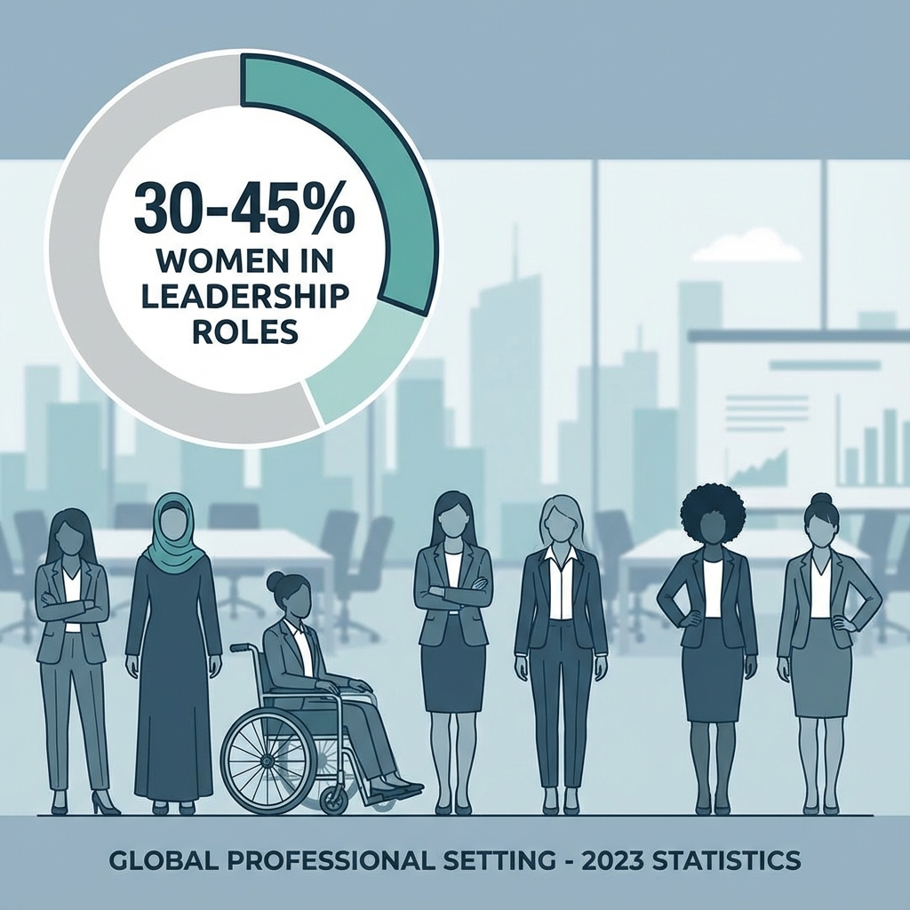
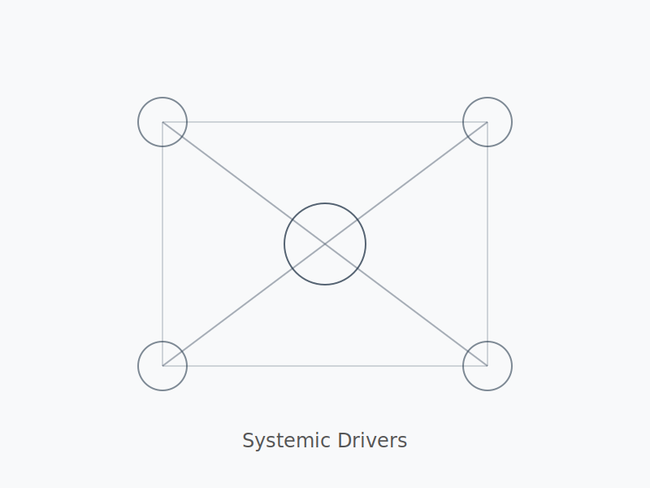
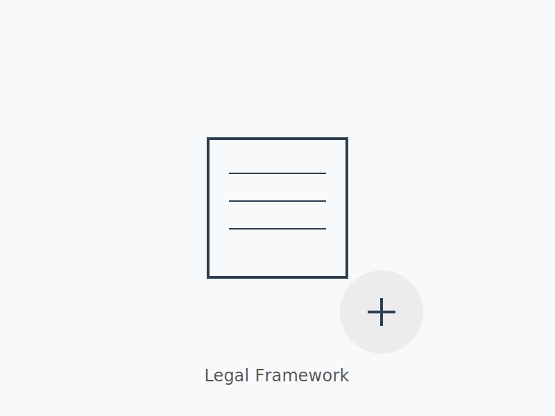
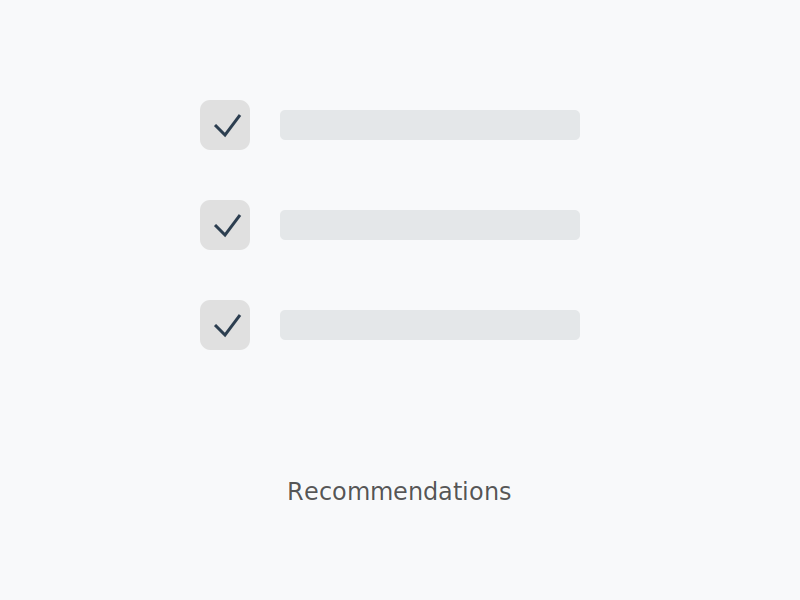
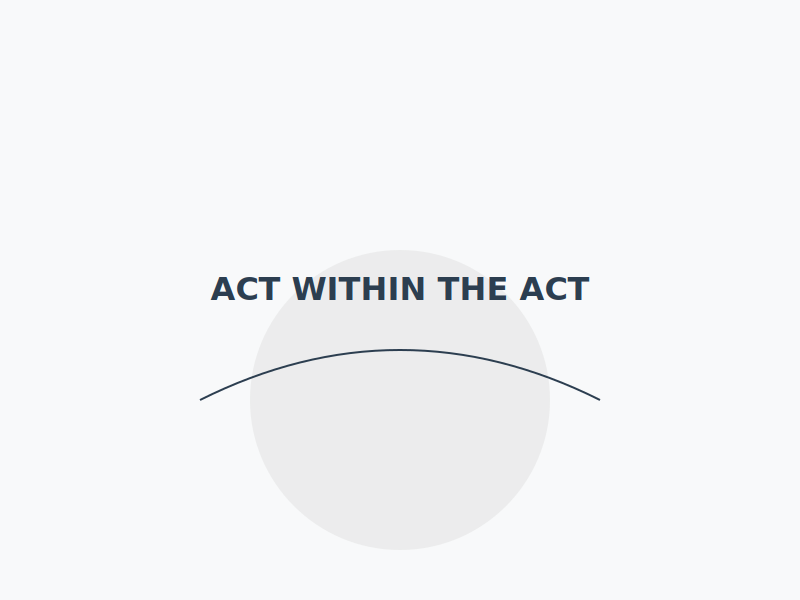
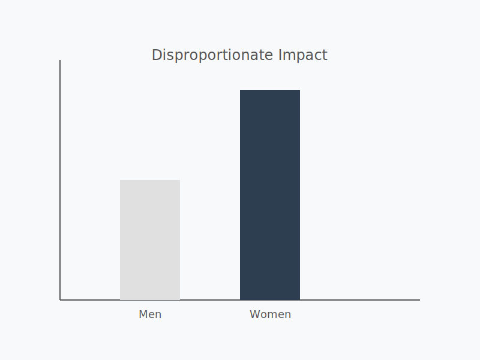
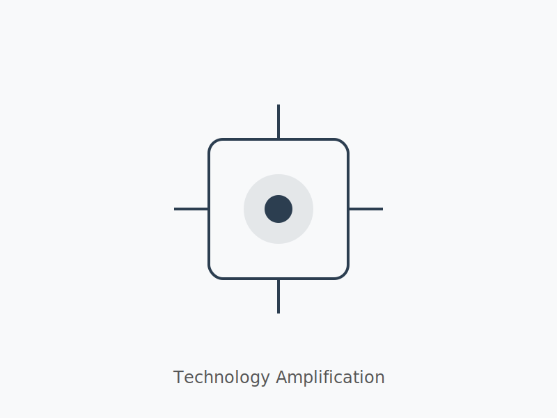

Technology-Facilitated Gender-Based Violence (TFGBV)
The Invisible Violence in Digital Workplaces
What is TFGBV?
- Violence using or amplified by technology in the workplace
- Targets women & girls disproportionately
- Online acts → offline workplace consequences
Forms of TFGBV (Workplace Examples)
- Image-based sexual abuse at/through workplace channels
- Deepfake sexual content used against an employee
- Sextortion tied to employment or workplace access
- Workplace-targeted online harassment & misogyny
- Stalking / surveillance of an employee’s work activity
- Doxxing of an employee’s work contact details
How Common Is It?
- 30–45% women online experience some form
- Young women most affected
- Deepfakes: majority victims women
- Massive underreporting

Impact on Survivors (Workplace Focus)
- Psychological trauma affecting work performance
- Reputation damage within workplace
- Economic loss (job loss, missed work)
- Physical safety risks linked to workplace exposure
Why It Happens (Workplace Drivers)
- Platform/IT weaknesses in workplace systems
- Anonymity + virality via workplace networks
- Easy access to AI tools that can target employees
- Weak workplace policies / weak enforcement of Act
- Gender norms & impunity in workplace culture

Legal Landscape (Within the Act)
- Act defines harassment & applies to workplaces
- Organizations must form Inquiry Committees
- Complaints may go to Committee or Ombudsperson per Rules

What Works (Aligned With the Act)
- Survivor-centered support in workplace procedures
- Fast takedowns from workplace-managed systems
- Strong platform and employer accountability (per Act)
- Clear workplace policies consistent with the Act & Rules
- Awareness & prevention programs inside organizations

Key Recommendations (Act-Compliant)
- Adopt Act-aligned definitions and policies in organizations
- Ensure Inquiry Committees meet Act/Rules requirements
- Rapid workplace response mechanisms & reporting channels
- Digital literacy & rights training for staff
- Multi-sector coordination following Act procedures

Closing Message
TFGBV in workplaces is real, preventable — act within the Act.

The Gendered Nature (Workplace Lens)
- Women & girls targeted disproportionately at work
- Abuse reinforces workplace power imbalance

Technology’s Role (Workplace Systems)
- AI-enabled abuse can target employees faster
- Harder to detect & remove from workplace platforms
- Cross-border hosting complicates workplace remedies

Call to Action
Safer digital workplaces require:
- Act-compliant policies & committees
- Faster employer/platform action
- Staff awareness & training

1 / 13